Buněčná stěna (BS) je jednou ze základních charakteristik rostlinné buňky, odlišujících ji od buňky živočišné. Tvoří její základní skelet, podmiňuje tvar a pevnost buněk. Buněčné stěny jsou spolu s mezibuněčnými prostorami součástí tzv. apoplastu. Buněčná stěna je produktem metabolické aktivity protoplastu (např. enzym celulózasyntáza je asociován s cytoplazmatickou membránou). V průběhu ontogeneze buňky prodělává BS postupný vývoj, takže např. u dospělé sklerenchymatické buňky lze rozlišit ve struktuře BS střední lamelu, primární buněčnou stěnu a jednotlivé vrstvy sekundární buněčné stěny.
Jádro je strukturou eukaryotické buňky, která obsahuje většinu genetické informace buňky, uloženou v deoxyribonukleové kyselině (DNA, angl. deoxyribonucleic acid). Nedělící se jádro (tedy v období interfáze buněčného cyklu) je uzavřeno dvojjednotkovou jadernou membránou. Uvnitř jádra v se vyskytuje obvykle jedno nebo více jadérek, v nichž jsou syntetizovány ribozómy.
Buněčná stěna, jádro a jadérko v epidermálních buňkách cibule kuchyňské (Allium cepa) Pomocí žiletky a pinzety stáhneme kousek epidermis s povrchu dužnaté šupiny (suknice) cibule kuchyňské (Allium cepa). Takto získaný preparát namontujeme na podložní sklo do vody, překryjeme krycím sklíčkem a pozorujeme. Alternativně můžeme k preparátu přidat cca 200 µl roztoku DAPI (4'6-diamidino-2-fenylindol; roztok 10 µg/ml 50% glycerolu) a po inkubaci trvající několik desítek minut pozorovat pomocí fluorescenčního mikroskopu
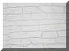
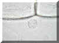
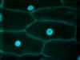
Pozorování jader v buňkách cévních svazků transgenních rostlin huseníčku (Arabidopsis thaliana) Pomocí fluorescenčního mikroskopu můžeme v transgenních rostlinách huseníčku sledovat buněčná jádra, která exprimují zeleně fluoreskující protein (GFP). V tomto případě byl pro transformaci rostlin použit promotor CoY, transformované rostliny exprimují GFP pouze v jádrech buněk vodivých pletiv. Do kapky vody na podložní sklo přidáme tu část rostliny, v níž chceme pozorovat lokalizaci jader ve vodivých pletivech a pozorujeme s pomocí fluorescenčního mikroskopu.
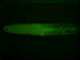
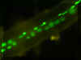
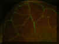
Škrob je nejdůležitější zásobní látkou vyšších rostlin. Slouží rostlině k uložení energie získané v průběhu procesu fotosyntézy. Škrobová zrna se tvoří v buňce zejména ve specializovaném typu leukoplastu, v tzv. amyloplastech, ale též v chloroplastech. Podle počtu iniciálních míst ukládání škrobu se tvoří buď jednoduchá škrobová zrna (narůstají z jednoho místa označovaného jako hilum), nebo složená škrobová zrna (narůstají v rámci daného plastidu z mnoha iniciálních míst). U složených škrobových zrn počet elementárních zrn, které je tvoří, značně kolísá v rozpětí řádů jednotek až tisíců. U některých škrobových zrn můžeme pozorovat jednotlivé vrstvy, z nichž je škrobové zrno složeno - tato vrstevnatost je dána různým obsahem vody. Jednoduchá škrobová zrna lze podle pozice rozlišit na zrna koncentricky vrstevnatá a excentricky vrstevnatá. Vlivem mechanického pnutí se často uvnitř větších zrn vytváří rhexigenní dutina. V průběhu vývoje mohou škrobová zrna narůst do takových rozměrů, že dojde k protržení membrán amyloplastů a tím k uvolnění škrobových zrn do cytoplazmy. Škrobová zrna mají často pro daný rostlinný druh charakteristický tvar. Příkladem mohou být škrobová zrna pryšců (Euphorbia sp.) nebo pelionie ( Pellionia sp.).
Pozorování specifického tvaru škrobových zrn vybraných druhů rostlin Pomocí preparační jehly seškrábneme z rozpůlených obilek ovsa setého (Avena sativa), rýže (Oryza sativa) či jiné obiloviny do kapky vody na podložním sklíčku trochu endospermu (vnitřní pletivo obilky bohaté na zásobní látky), překryjeme krycím sklíčkem a pozorujeme. Stejný postup použijeme se semeny fazolu (Phaseolus vulgaris). V případě lilku bramboru preparační jehlou seškrábneme trochu pletiva z vnitřku zásobní hlízy bramboru, další postup je obdobný jako u obilek. Škrobová zrna pryšce zářivého (Euphorbia splendens) pozorujeme přímo v kapce latexu - odřízneme kousek stonku pryšce, na podložní sklo zachytíme kapku latexu vytékajícího z mléčnic, překryjeme krycím sklíčkem a pozorujeme. V případě pelionie (Pellionia) zhotovíme příčné ruční řezy stonkem, namontujeme jako dočasný preparát do vody a pozorujeme.
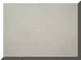
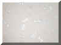
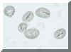
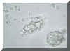
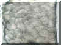
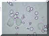
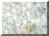
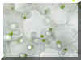
Protoplast rostlinné buňky není statický, naopak v metabolicky aktivní živé buňce, zejména pokud má větší rozměry, dochází k jevu označovanému jako cytoplazmatické proudění neboli cyklóza. Ačkoli tento název implikuje, že často velmi výrazný a optickým mikroskopem pozorovatelný pohyb organel je v rostlinných buňkách způsoben jejich "strháváním" proudící cytoplazmou, ve skutečnosti je tomu často přesně naopak. Organely, např. chloroplasty nebo jiné typy plastidů, jsou navázány myosinem na aktinová vlákna cytoskleletu, tento aktin-myosinový komplex umožnuje jejich pohyb.
Lístek vodního moru kanadského (Elodea canadensis) namontujeme jako dočasný preparát do vody. Osvětlíme jej co nejintenzivnějším světlem a po několika minutách pozorujeme pohyb chloroplastů. Pohyb plastidů je možné pozorovat rovněž v trichomech na bázi nitek v květech tradeskancie (Tradescnatia sp.).
Pohyb chloroplastů v chlorenchymatických buňkách vodního moru kanadského (Elodea canadensis) a leukoplastů v trichomech na bázi nitek v tyčinkách tradeskancie (Tradescantia sp.).
Plazmolýza je jev, který nastává, ocitne-li se rostlinná buňka v prostředí, které je vůči jejímu obsahu (zejména vůči vakuolární šťávě) hypertonické, jinými slovy v roztoku, který má vyšší koncentraci osmoticky aktivních látek. V tomto případě dochází k proudění vody z buňky směrem ven po spádu veličiny nazývané vodní potenciál, což vede nejprve ke ztrátě turgoru, později až k odchlípnutí cytoplazmatické membrány od buněčné stěny. Tento děj je možné mikroskopicky pozorovat, pokud sledované buňky obsahují velké vakuoly s anthokyany nebo pokud obsahují chloroplasty. Plazmolýza je v počátečních fázích vratným dějem, může však vést až ke smrti buňky.
Nejprve si připravíme roztok, který bude s jistotou hypertonický vůči všem použitým rostlinným buňkám - použijeme např. 0,8 M vodný roztok sacharózy, kterou můžeme nahradit např. rovněž snadno dostupným chloridem sodným. Jako kontrolní, hypotonický roztok použijeme destilovanou vodu. Do těchto inkubačních roztoků vložíme kousky epidermis dužnaté šupiny (suknice) cibule kuchyňské (Allium cepa) obsahující anthokyany, lístky mechu měříku příbuzného (Plagiomnium affine) a doušky hustolisté (Egeria densa). Inkubujeme po dobu nejméně 10 minut, po celou dobu musíme zabezpečit dokonalý kontakt buněk s inkubačním roztokem. Po uplynutí inkubační doby namontujeme preparáty, přičemž pro každé pletivo použijeme vždy jako uzavírací médium ten roztok, v němž bylo inkubováno.